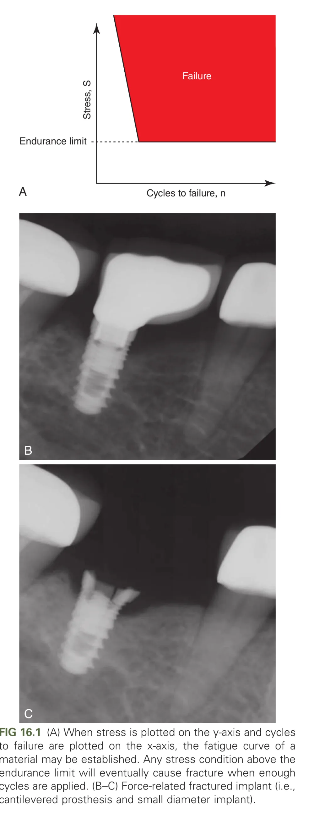
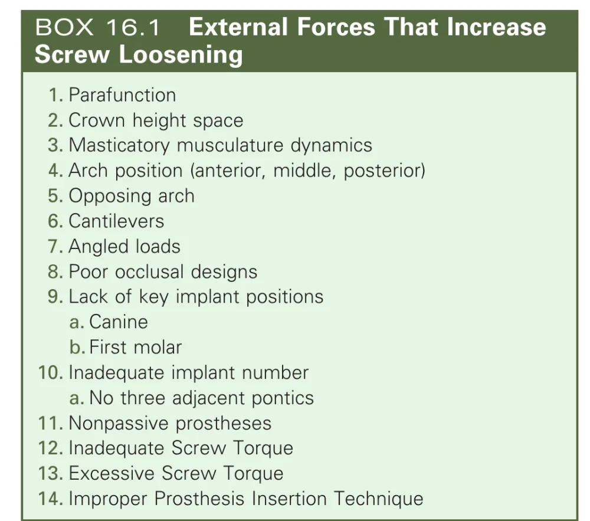

نسخه استخراجشده؛ ترجمه یا تأیید علمی انجام نشده است. وضعیت: captured
ماژول تازهای آغاز میشود. سه ماژول گذشته طرح درمان و پروتز متحرک بودند؛ این ماژول به عوارض پروتز ثابت میپردازد.
و بیا با یک واقعیت آماری شروع کنیم: ایمپلنتهای دندانی بقای بالینی عالی نشان دادهاند — اما مطالعات طولی متعددی شیوع بیشتر عوارض بیولوژیک و تکنیکی را در مقایسه با ترمیمهای تمامپوشش متکی بر دندان نشان دادهاند.
و پیش از هر عارضهای، یک اصل:
«تنش بیومکانیکی، که مسئول اکثریت عوارض ایمپلنت دندانی است، بیشتر از عملکرد اکلوزالی ناشی میشود.» و نکتهی کلیدی: «بیشتر عوارض بیومکانیکی در نتیجهی یک رویداد نیروی واحد رخ نمیدهند؛ آنها معمولاً در طول زمان توسعه مییابند.»
این نیروی تکراری، از یک منحنی خستگی پیروی میکند — منحنیای که مستقیماً به شمار چرخهها و شدت نیرو مربوط است.
و «حد تحمل» (endurance limit) چیست؟ وقتی نیروهایی با بزرگی کمتر بهطور مکرر با یک جسم تماس پیدا میکنند، نیرو در نهایت میتواند از حد تحمل فراتر رود و شکست ماده رخ دهد.
و تشبیهی که همهچیز را روشن میکند: «یک رختآویز سیمی که خم میشود، بار اول نمیشکند؛ اما خمهای مکرر ماده را میشکنند — نه به این دلیل که آخرین خم نیرومندتر بود، بلکه بهدلیل خستگی حاصل.» و همین اصل بر ایمپلنتهای دندانی هم صادق است، و به همین دلیل شایعترین علت عوارض ایمپلنت و اجزای پروتز، شرایط بیومکانیکیای است که خستگی میسازند.
و پیامد عملی این اصل: «هر شرایط تنشی بالای حد تحمل، سرانجام وقتی چرخههای کافی اعمال شوند، شکست ایجاد خواهد کرد.»
پس یک نتیجهگیری بالینی مهم: اگر یک پروتز پس از دو سال بشکند، سؤال درست «چه اتفاقی امروز افتاد؟» نیست — سؤال درست این است که «این سیستم دو سال بالای حد تحملش کار میکرده و ما ندیدیم؟» شکست، نقطهی پایانِ یک روند است نه یک حادثه.
و رابطهی نیرو و چرخه: «هرچه نیرو بزرگتر، چرخههای کمتری پیش از وقوع شکست لازم است.» و روشن بدان: علت عارضه، ترکیب و رابطهی هر دو است — هم مقدار نیرو و هم شمار چرخهها.

و اکنون عارضهای که این یونیت به آن اختصاص دارد:
شل شدن پیچ اباتمنت با میانگین کلی ۶ درصد از پروتزهای ایمپلنت ساختهشده همراه بوده است.
و رتبهاش: «شل شدن پیچ شایعترین عارضهی پروتزی ایمپلنت است و تقریباً ۳۳ درصد همهی عوارض پروتودانتیک پس از ایمپلنت را تشکیل میدهد.» — یعنی یک عارضه، یکسوم کل پرونده.
و تفکیک آن بر پایهی نوع پروتز، در مطالعات جدیدتر:
به این ترتیب دقت کن — و با یونیت پیش مقایسهاش کن: اوردنچر کمترین نرخ شل شدن پیچ را دارد. یعنی همان سیستمی که در یونیت ۴٫۴ بیشترین عوارض نگهداری اتچمنت را داشت، در این شاخص بهترین است. هر پروتز، پاشنهی آشیل خودش را دارد.
و دو مطالعهی زمانمند:
و چرا شل شدن پیچ جدی است؟ بهخاطر زنجیرهای از سه پیامد:
به پیامد دوم دقت کن، چون یک تصمیم طراحی را از پیش تعیین میکند: شل شدن پیچ در یک ترمیم سمانی، تاج را قربانی میکند؛ در یک ترمیم پیچشونده فقط یک پیچگوشتی میخواهد. این تفاوتِ قابلتعمیر بودن، بخشی از بحث سمانی در برابر پیچشونده است که در یونیت ۵٫۳ به آن میرسیم.
و مفهوم مرکزی که کل اتیولوژی بر آن سوار است:
نیروهای خارجی که بر یک اتصال پیچی اثر میکنند، در بحث شل شدن پیچ «نیروهای جداکنندهی اتصال» (joint-separating forces) نامیده میشوند. و نیرویی که پیچها را کنار هم نگه میدارد «نیروی گیرهای» (clamping force) نام دارد.
و قاعدهی سادهای که همهچیز را جمع میکند: «وقتی نیروهای خارجی جداکنندهی اتصال بزرگتر از نیرویی باشند که پیچها را کنار هم نگه میدارد، پیچ شل خواهد شد.» — دو کفهی یک ترازو. کل درسهای بعدی، یا سنگین کردن کفهی گیره است یا سبک کردن کفهی جداکننده.
و یادت باشد این نیروها تازه نیستند: «همان نیروهایی هستند که عوامل خطر شکست ایمپلنت، تحلیل استخوان کرستال، و شکست اجزاند.» — یعنی آنچه در سه ماژول گذشته دربارهی عوامل نیرو خواندی، اینجا دوباره و با نام تازه ظاهر میشود.
